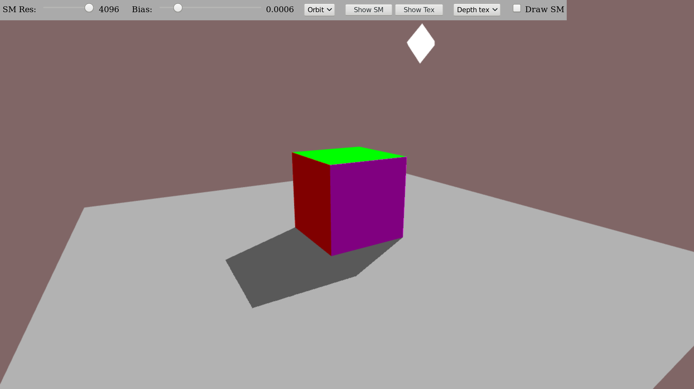
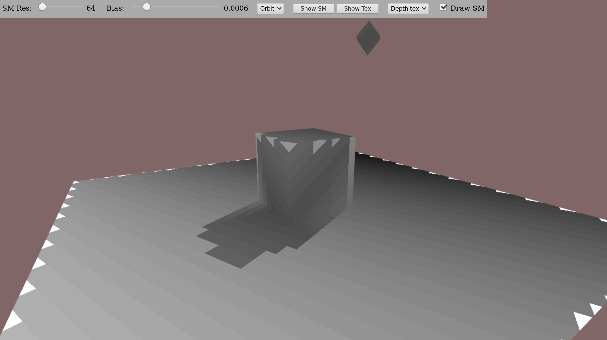
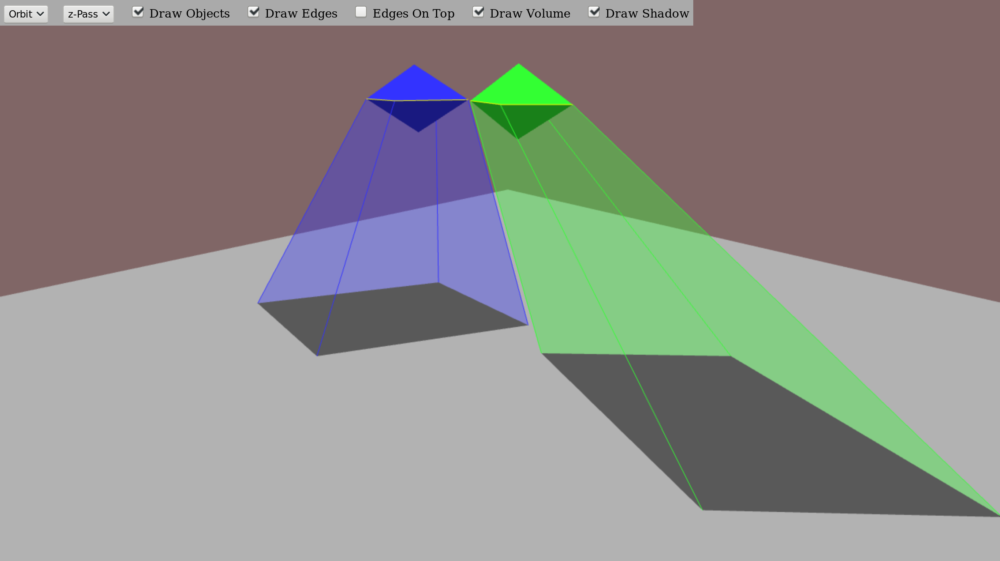
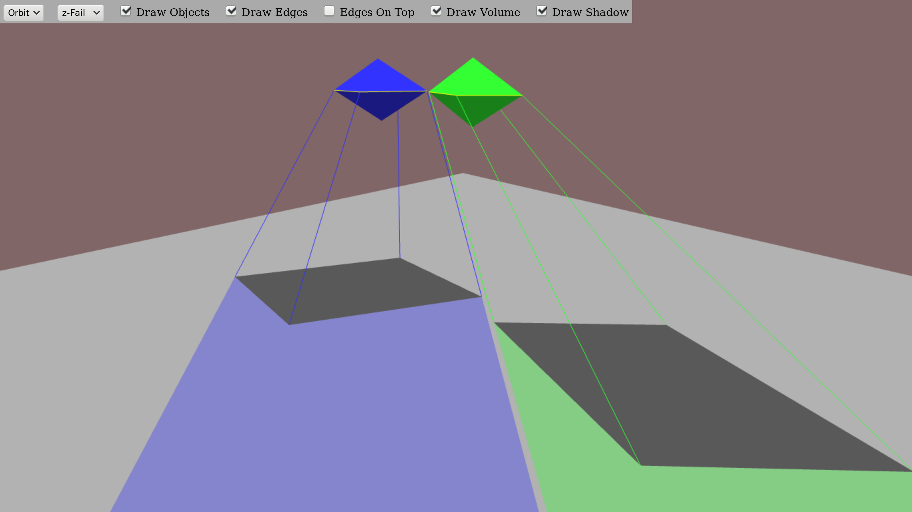

Shadow Mapping WebGL Demonstration
This WebGL demo uses the extensions WEBGL_depth_texture and OES_texture_float to store the shadow map inside a depth texture. If your system does not provide this extensions, please choose "Color tex" in the top panel.
Usable keys: arrow keys, page up/down, +/-, mouse drag/drop, mouse wheel
On displaying shadow map or texture contents, please click on the image to return.
Options:
- Shadow Map Resolution (SM Res): Internal resolution that is used to generate the shadow map.
- Bias: Offset that is used for the shadowing decision.
- Orbit/Free: Changes the camera movement mode.
- Show Shadow Map (Show SM): Displays content of the shadow map. Click on the image to return.
- Show Shadow Map (Show Tex): Same as "Show SM". Use in case the color tex option is used.
- Depth tex/Color tex: Switch the texture type that stores the shadow map.
- Draw SM: Use information from the shadow map for object coloring.
 
Shadow Volume WebGL Demonstration
Usable keys: arrow keys, page up/down, +/-, mouse drag/drop, mouse wheel
Options:
- Orbit/Free: Changes the camera movement mode.
- z-Pass/z-Fail: Switch the shadow volume rendering approach.
- Draw Objects: Draw shadow casting objects.
- Draw Edges: Draw edges of the shadow volume planes and object silhouette edges (yellow).
- Edges On Top: Draw edges on top of solid objects and ground.
- Draw Volume: Draw areas of the shadow volume that are filled when computing the shadows.
- Draw Shadow: Draw shadow on top of ground.
 Repository